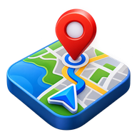

Pathik
You are offline. Your saved Pathik information remains available locally. Reconnect to use live search, routing and map tiles.
Try Pathik again
You are offline. Your saved Pathik information remains available locally. Reconnect to use live search, routing and map tiles.
Try Pathik again